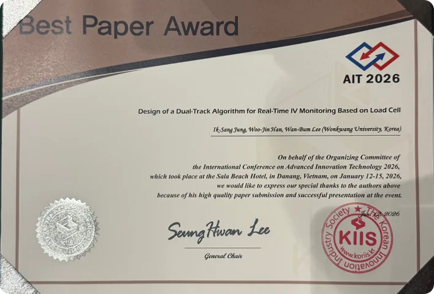
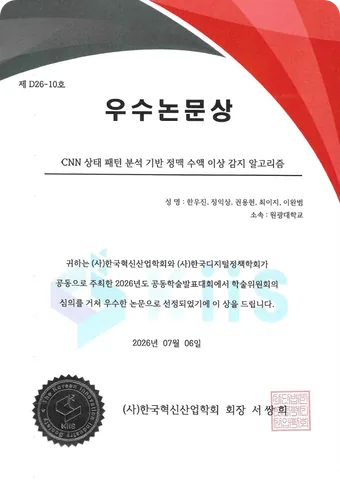
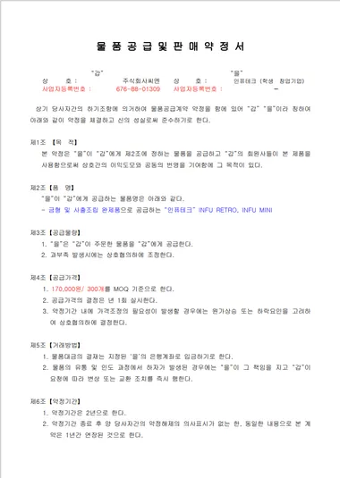
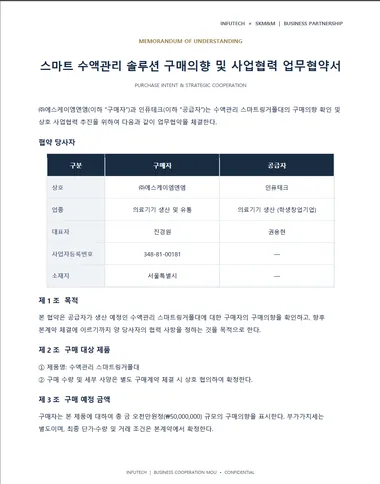
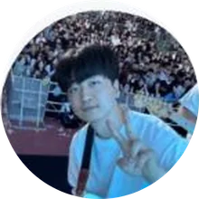

데일리벳 · 2026.09.09
「동물병원 피해구제 신청 급증, ‘진료상 과실’이 대부분」
“의사소통이 어려운 반려동물을 대상으로… 소비자가 진료 과실을 명확히 입증하기 어렵다” — 한국소비자원

2026 NEXT WAVE-UP 아이디어 리그 · 일반·기술 트랙
말하지 못하는 입원 동물의 투약안전을 지킵니다
기존 링거폴대에 무게센서 모듈 하나만 걸면
잔량 · 종료시간 · 이상을 24시간 자동 기록합니다

안녕하십니까, INFUTECH입니다. 저희는 말하지 못하는 입원 동물의 수액을, 기존 링거폴대 그대로 지켜보는 AIoT 솔루션을 만듭니다.

03:00새벽 3시, 동물병원 입원실
다음 순회 전까지, 이 변화는
기록되지도, 확인되지도 않습니다
실제 전남대학교 · 전북권 동물병원 설문조사 결과
새벽 3시 동물병원 입원실을 떠올려 보십시오. 보호자는 집에 있고, 당직 수의사는 다른 환자를 보고 있습니다.
다음 순회 전까지 이 변화는 기록되지도, 확인되지도 않습니다. 저희가 푸는 문제는 바로 이 두 가지, 기록 공백과 확인 공백입니다.

2021→2025 3배, 올해는 상반기에만 45건
기록이 없으면 5건 중 4건이 미해결
데일리벳 · 2026.09.09
“의사소통이 어려운 반려동물을 대상으로… 소비자가 진료 과실을 명확히 입증하기 어렵다” — 한국소비자원
수기 기록에 의존하는 투약 관리 → 자동으로 남는 기록이 필요합니다
출처: 한국소비자원 동물병원 피해구제 분석(2026.9, 2021~2026.6 접수 128건) · 데일리벳 2026.09.09
먼저 기록 공백입니다. 많은 동물병원이 아직 투약을 손으로 기록합니다.
한국소비자원에 접수된 동물병원 피해구제 신청은 2021년 9건에서 2025년 27건으로 세 배가 됐고, 올해는 상반기에만 45건입니다.
그런데 진료기록이 없으면 분쟁 해결률은 19.5%로 떨어집니다. 다섯 건 중 네 건은 해결되지 못합니다. 그래서 자동으로 남는 기록이 필요합니다.
지금 쓰는 링거 걸이에 모듈을 걸고, 수액백은 모듈 후크에 겁니다. 폴대 교체도 공구도 필요 없습니다.
로드셀이 수액 무게를 1초마다 재고, 칼만필터가 흔들림을 보정합니다.
대시보드와 휴대폰에서 잔량, 종료 예상시간, 이상 알림을 바로 확인합니다.
저희 해법은 INFU RETRO, 무게센서 모듈 하나입니다. 지금 쓰는 링거 걸이에 모듈을 걸고, 수액백은 모듈 후크에 겁니다. 폴대 교체도 공구도 필요 없습니다.
로드셀이 수액 무게를 실시간으로 재고, 칼만필터가 흔들림을 보정합니다.
그리고 대시보드와 휴대폰에서 잔량, 종료 예상시간, 이상 알림을 바로 확인합니다. 센서는 하나, 공구는 필요 없습니다.
01
1초 간격 로드셀 측정
02
동물 움직임 · 폴대 흔들림으로 생긴 순간 노이즈 제거
03
투여 초기 무게 감소량과 방울 수(GTT)로 투여속도 추정
04
시계열을 이미지 패턴으로 바꿔 정상 · 이상 분류

+ 자이로 보정 학습테스트 환경에서 자이로로 흔들림 ↔ 무게 관계를 학습해 무게를 보정합니다. 그래서 실제 제품에는 무게센서 하나만 들어갑니다.
검증 정확도 (val_acc)
99%
기초 · 영양수액 등 10여 종 점도별 무게 감소 패턴 학습 → 자동 보정
이미지 패턴 학습으로 하드웨어는 가볍게, 다양한 변수에도 적용
핵심은 알고리즘입니다. 무게를 1초마다 수집하고, 칼만필터로 동물 움직임을 걸러내고, 초기 무게 감소량과 방울 수로 유속을 계산하고, 통계식 대신 신호를 이미지 패턴으로 바꿔 CNN이 판별합니다.
테스트 환경에서는 자이로로 흔들림과 무게의 관계를 학습해 보정하기 때문에, 실제 제품은 무게센서 하나로 가볍게 만들 수 있습니다.
CNN 검증 정확도는 99%이고, 수액 10여 종의 점도를 학습해 자동 보정합니다.


하드웨어는 60×35mm 자체 PCB에 무게센서 하나만 올렸습니다. 무선 통신과 이벤트 전송으로 트래픽을 80% 이상 줄였습니다.

AIT 2026 국제학술대회 · Best Paper Award · 2026.01

한국혁신산업학회 · 한국디지털정책학회 우수논문상 · 2026.07.06


논문 초록
특허 심사 진행 중 — 하드웨어 특허 · 소프트웨어 특허 · 실용신안 각 1건
이 연구로 국내외 학회에서 두 번 상을 받았습니다. 1월 AIT 2026 국제학술대회 Best Paper Award, 7월 한국혁신산업학회 · 한국디지털정책학회 공동학술대회 우수논문상입니다.
| 제품 | 가격 | 측정 방식 | 설치 방식 | 주 사용처 |
|---|---|---|---|---|
| 동물용 인퓨전펌프동물병원 장비 | 약 110만 원 | 펌프식 유량 제어 | 별도 장비 도입 | 동물병원 |
| DripAssist美 Shift Labs | 약 $400 | 광학 방울 계수 | 드립 챔버 클립 | 사람 · 수의 |
| 토킹폴삼성 C랩 · 2017 | 미공개 | 무게센서 | 폴대 일체형 (교체) | 사람 병원 |
| 아이링거신성티케이 | 미공개 | 적외선 · 광학 | 수액 세트 클립 | 사람 병원 |
| INFU RETROINFUTECH | 25만 원+ 월 12만 원 | 무게센서 + CNN | 기존 폴대 상단 장착 | 동물병원 전용 |
가장 낮은 도입가 · 기존 폴대 그대로 · 동물병원 입원 환경에 맞춘 설계
출처: SW Medi 동물용 인퓨전펌프 판매가(2025) · Shift Labs 제품 자료 · 삼성전자 뉴스룸(2017) · KOITA 기술사업화 DB(아이링거) · 아이디어 제안서
대안을 보겠습니다. 동물용 인퓨전펌프는 대당 약 110만 원이고, 다른 모니터링 기기들은 대부분 사람 병원용이거나 방울을 세는 광학 방식입니다.
INFU RETRO는 25만 원에 기존 폴대에 바로 끼우는 무게센서 방식으로, 동물병원 입원 환경에 맞춰 설계했습니다.
사업화 프로그램모두의창업 1기 · 2R 확장형 상품
하드웨어 특허
1건
변리사 통해 심사 진행 중
소프트웨어 특허
1건
변리사 통해 심사 진행 중
실용신안
1건
변리사 통해 심사 진행 중
KC 인증
병행 진행 중특허 심사와 함께 제품 인증을 동시에 추진
의료기기 인증
인증 없이 사용 가능반려동물 대상 제품임을 확인 → 실제 상용 판매 가능
저희는 모두의창업 1기 2R 확장형 상품입니다. 하드웨어 특허, 소프트웨어 특허, 실용신안 각 1건이 변리사를 통해 심사 중이고, KC 인증도 병행하고 있습니다.
반려동물 대상 제품이라 의료기기 인증 없이 사용할 수 있음을 확인해, 바로 상용 판매가 가능합니다.



다음 단계제품 생산 · 인증을 마치면 수량 · 단가 · 납기를 정해 본계약으로 전환합니다
판로는 이미 문서로 확인했습니다. 전남대학교 동물병원과 구매의향서를 맺었습니다.
8월에는 ㈜사씨엔과 대당 17만 원, 최소 300개 기준의 물품공급 약정을, 10월에는 의료기기 유통사 ㈜에스케이엠엔엠과 5,000만 원 규모의 구매의향 업무협약을 맺었습니다. 제품 생산과 인증을 마치면 본계약으로 전환합니다.
반복 순회 · 수기 기록 부담 ↓, 장비 교체 없이 도입
시간별로 남는 투약 기록 → 신뢰와 분쟁 대응 근거
소진 · 중단 · 유속 이상을 먼저 발견

병원은 순회와 수기 기록 부담을 덜고, 보호자는 남는 기록으로 신뢰를 얻고, 반려동물은 이상을 더 빨리 발견합니다.
 CEO / Engineer권용현
CEO / Engineer권용현 Engineer정익상
Engineer정익상
Clinical Tester김은강 Marketer한예린
Marketer한예린 Field demonstration한별
Field demonstration한별이 일을 설계, AI, 펌웨어, 서버, 현장 협력을 맡은 저희 INFUTECH 팀이 해내겠습니다. 말하지 못해도 먼저 알아채겠습니다.
→Space다음 ←이전 12Enter12번 슬라이드로 O목차 N발표 노트 F전체 화면 B화면 가리기 HomeEnd처음 · 끝